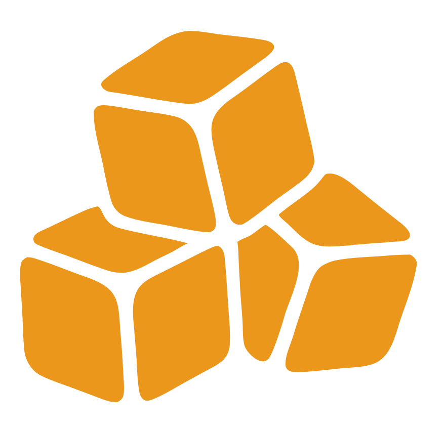

BUILT YOUNG, DESIGN PHASE
Test with
real people.
Today you meet your users, then watch someone use your app.

Today's objectives
By the end of today, you can...
- Explain what a persona is
- Make a primary persona and one more
- Write test tasks as goals
- Run a test without helping
- Pick the core flows worth testing
Today's principles
Start with people
Your user isn't you. Design for how they think.
Test and learn
You don't know if it works until someone else tries it.
What's a persona?
A made-up person, based on real people, who stands for a group of your users.
Meet Maya
Maya, 16
Plays soccer and lifts 3 times a week.
"I just want to log it and get back to my set."
Get stronger before the season.
To log a set in seconds.
Forgets what she lifted last time.
In sets and reps, with her phone in one hand.
Meet Sam
Sam, 19
New to the gym this year.
"I don't even know what I'm supposed to write down."
Make the gym a habit.
To know what to do next.
Gives up when an app asks too much.
In exercises, not sets.
Design for how they think
Your screens should match how your personas think.
Logs between sets, with one hand.
Big buttons. Repeat the last set in one tap.
Doesn't know what to log.
Suggest a starter workout.
Your turn: who are your personas?
Start with your primary user, then one more.
- Who are they?
- What are their goals?
- What do they need?
- What gets in their way?
- How do they think?
Why we test
You know how your app works.
Your users don't.
When people get stuck, they blame themselves. It's almost always the design.
A test in 6 steps
Weak task vs strong task
"Tap the plus button and add a workout."
It tells them where to tap.
"You just finished at the gym. Record what you did."
It gives a goal, in a real moment.
Don't use the words on your buttons.
The hardest part: stay quiet
Don't help.
If they ask what to do, say:
"What would you try?"
Let's test it
"You just finished at the gym. You did 3 sets of 10 squats. Record what you did."
Open the link and share your screen.
Write down where they pause.
What did we notice?
- 1Where did they pause?
- 2What did they expect to happen?
- 3What would you change?
Test your core flows
You can't test everything. Start with the flows your app can't work without.
Your turn: pick your core flows
Which flows will you test?
- 1Name your core loop.
- 2Pick the 1 or 2 flows in it.
- 3Run Prompt 5: your test guide.
Your homework
Due Sunday at 1 PM ET, before Session 3.
Tidy up your flows
The flows, not the looks. Stay in grey wireframes.
Test with 2 or 3 people
People who match your personas.
Make changes
Fix what tripped up your testers.